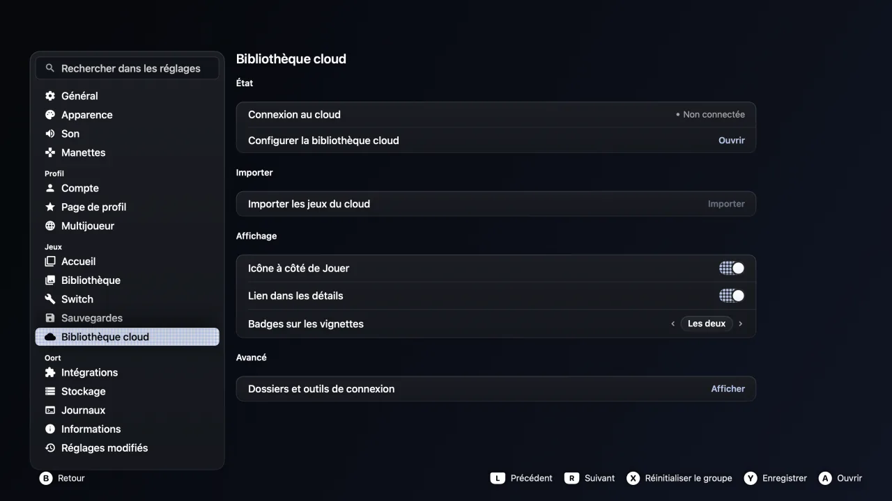
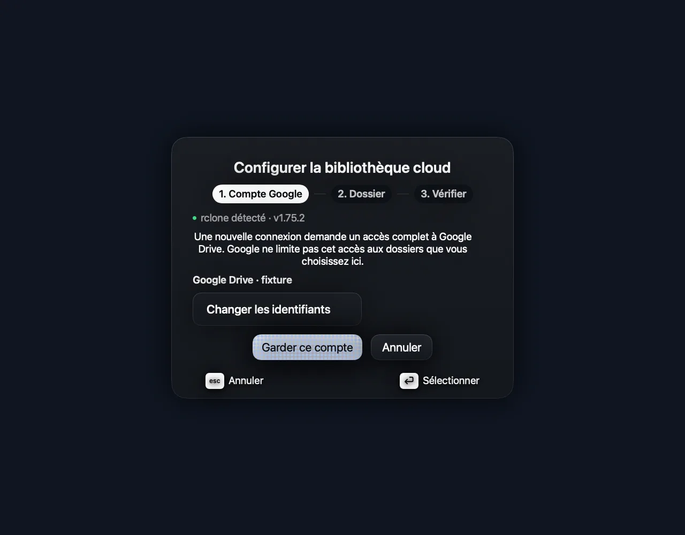
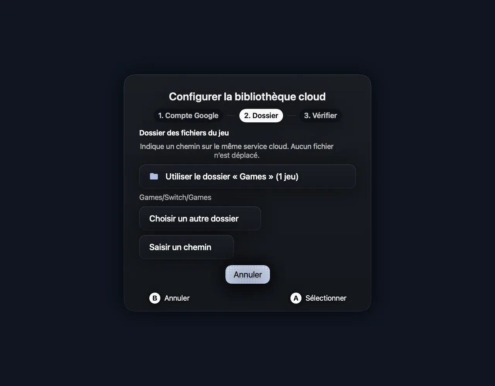

Bibliothèque cloud (Google Drive)
- 1
À quoi ça sert
Garder en ligne tes jeux compilés et les retrouver sur un autre Mac. Seul Google Drive est pris en charge, et tes sauvegardes n’y sont pas. Garde une copie de ce qui compte.
Lu dans le code, pas essayé : D’où ça vient

- 2
L’outil : rclone
Oort utilise le rclone déjà sur ton Mac, ou demande avant de prendre celui de rclone.org. Avancé permet de choisir le tien.
Lu dans le code, pas essayé : D’où ça vient
- 3
Connecte Google
Garde une connexion existante, ou Se connecter. Google accorde à rclone l’accès à tout ton Drive, pas à un seul dossier.
Vérifié avec des jeux inventés : D’où ça vient

- 4
Choisis le dossier
Oort cherche une bibliothèque dans
Games, sinon tu donnes un chemin. Rien n’est déplacé par ce choix.Vérifié avec des jeux inventés : D’où ça vient

- 5
Télécharge un jeu
L’onglet Cloud montre ce qui est en ligne. Télécharger l’app la ramène ; Télécharger les fichiers du jeu demande ensuite de compiler.
Vérifié avec des jeux inventés : D’où ça vient

- 6
Débranche
Déconnecter retire la connexion de ce Mac. Les fichiers restent dans ton Drive. La connexion rclone peut servir à d’autres outils.
Lu dans le code, pas essayé : D’où ça vient


Ce qui a été essayé
Jamais essayée avec un vrai Google Drive dans cette version : seulement contre un faux Drive.